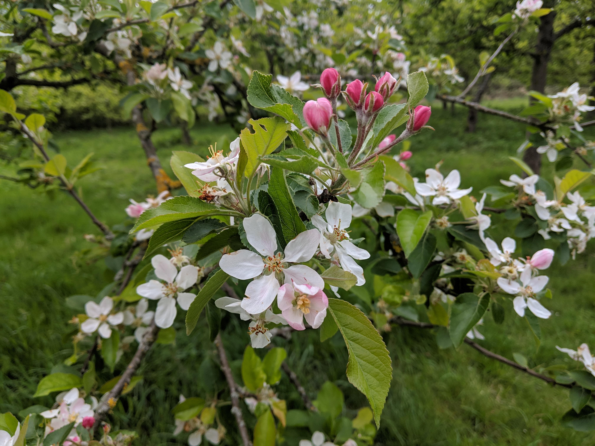

Come and take a walk on the wild side of West Yorkshire!
“It seems to me that the natural world is the greatest source of excitement; the greatest source of visual beauty, the greatest source of intellectual interest. It is the greatest source of so much in life that makes life worth living.”
― David Attenborough
In 2014 over half the world’s population lived in urban areas, and by 2050 it is expected to reach 66%. People have become increasingly isolated from experiencing nature due to this rapid urbanisation (Wilson, 1984; Miller, 2005). The amount of green space has quickly declined due to exploitation for development. In urban Britain, many green spaces have historical and cultural value, as well as being noted for their biological importance and role in promoting health and wellbeing. As a result, there has been increased attention paid to urban green space (Sandström, 2008).
Natural England’s ANGSt (Accessible Natural Green Space Standard) recommends that everyone, should be within 300m of green space of at least 2 hectares in size. It is based upon three principles:
- improving access,
- naturalness (including the biodiversity) and
- connectivity (Natural England, 2010).
Urban dwellers expect good access to green spaces (Rebele, 1994). Green spaces are a fundamental part of cultural life, however, the accessible green spaces are unevenly distributed and there is a significant variation in the quality and facilities available.
Here you can discover nature reserves across West Yorkshire and connect with wildlife.

Volunteering Opportunities
Fancy giving back?
Our incredible wild spaces wouldn't be what they are without wonderful people dedicating their time to giving back.
You can work alongside inspiring people and support your local wildlife.
All across West Yorkshire people give up their spare minutes, hours and days in the woodlands, amongst meadows and on the heathlands. Thousands of volunteers are working together to create and sustain our wildlife for everyone. You can take part too! It doesn't matter how much or little time you can give, anything makes a difference. Any skills and experience you can bring is a bonus!
There are many ways in which you can help the wildlife living on your doorstep. Whatever you decide to do you’ll be part of an amazing effort, helping to protect and share the wonderful wildlife in West Yorkshire. Find an opportunity:
- Yorkshire Wildlife Trust: https://www.ywt.org.uk/get-involved/volunteer
- RSPB: https://www.rspb.org.uk/get-involved/volunteering-fundraising/volunteer/volunteer-opportunities/
- National Trust: https://www.nationaltrust.org.uk/volunteer
- The Conservation Volunteers: https://www.tcv.org.uk/yorkshire
- Parks and Countryside Service: https://www.leeds.gov.uk/leisure/parks-and-countryside/your-local-park/volunteering-with-the-parks-and-countryside-service
Events
Want a chance to meet some like minded people amongst our wildlife? Check out the events going on: